Package index
Stage 1 - Validation data
Read BirdNET selection tables, select clips for manual review, and cut and pack them. Each sampling design sends a different part of the night to review; later rounds leave out what was reviewed.
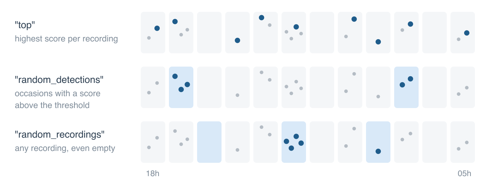
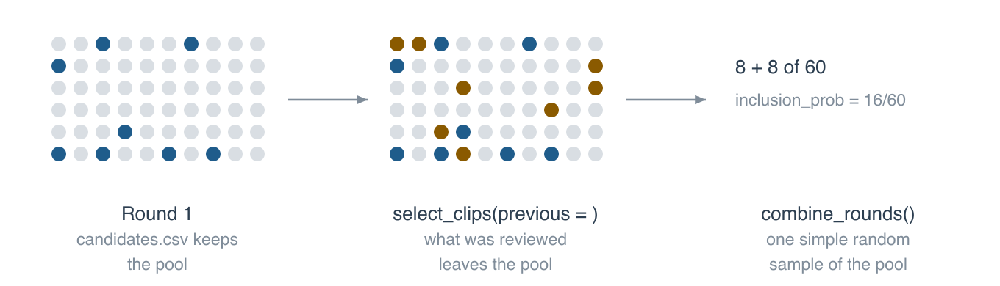
-
extract_validation_clips() - Build the validation clip set
-
read_selection_tables() - Read BirdNET selection tables
-
list_recordings() - List every recording made, from the audio folders
-
select_clips() - Select the clips to validate
-
select_directed() - Directed review round: units drawn with probability proportional to size
-
covariate_bins() - Bins of an occasion covariate for stratified clip selection
-
cut_clips() - Cut the selected clips
-
pack_clips() - Pack the clips into one zip per species
Stage 1 - Review app
Review the clips in a local app and read its verdicts.
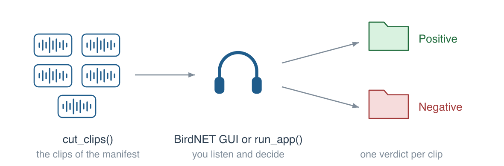
-
run_app() - Sample, review and export clips in a local app
-
app_verdicts() - Verdicts of the review app
-
identity_categories() - Categories offered for the identity of a negative clip
-
join_identities() - Join identities of negative clips recorded outside the app
-
confuser_summary() - What the false positives of each class are
Stage 1 - Several reviewers
Split the clips among reviewers, measure their agreement and combine their verdicts.
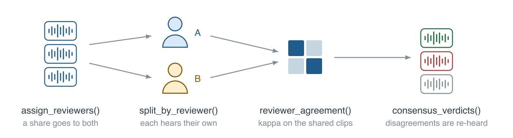
-
assign_reviewers() - Assign the clips to several reviewers
-
split_by_reviewer() - Copy each reviewer's clips to their own folder
-
reviewer_agreement() - Agreement between reviewers
-
consensus_verdicts() - Consensus verdicts of several reviewers
Stage 1 - After the review
Classify the reviewed clips and summarise precision, thresholds, presence and retraining clips. The diagram shows what to do with each label of review_support(), and how to compare the empirical and model-based thresholds.
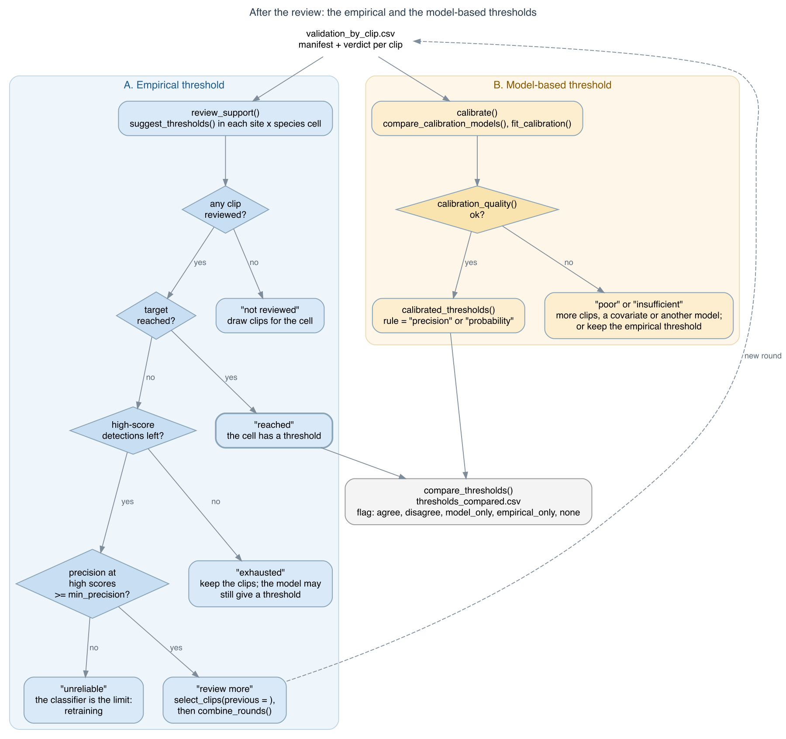
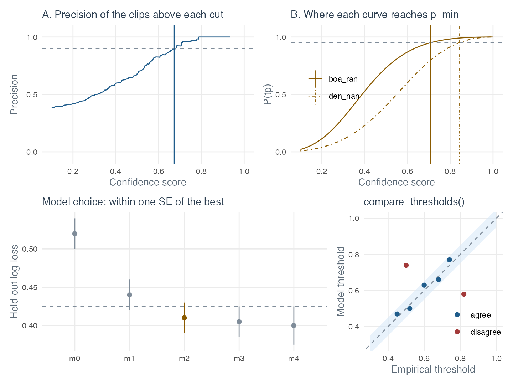

-
post_validation() - Summarise the manual validation
-
classify_review() - Classify the reviewed clips
-
precision_by_bin() - Precision by confidence bin
-
suggest_thresholds() - Suggest a confidence threshold per species
-
review_support() - Review support of each cell: is more validation worth it?
-
nightly_presence() - Confirmed presence by night
-
retraining_clips() - Positive clips for retraining
-
plot_precision() - Plot the precision curves
-
read_validation_tables() - Read and stack the validation tables
-
combine_rounds() - Combine the review rounds of a design
-
build_training_set() - Build the training folders for BirdNET-Analyzer
-
exclude_training_clips() - Leave the training clips out of a manifest
-
training_nights() - Nights and recordings of clips used to train a classifier
Stage 2 - Calibration
Calibrate confidence scores into probabilities of true detection and build nightly detection histories. The diagram has the steps and checks in order.
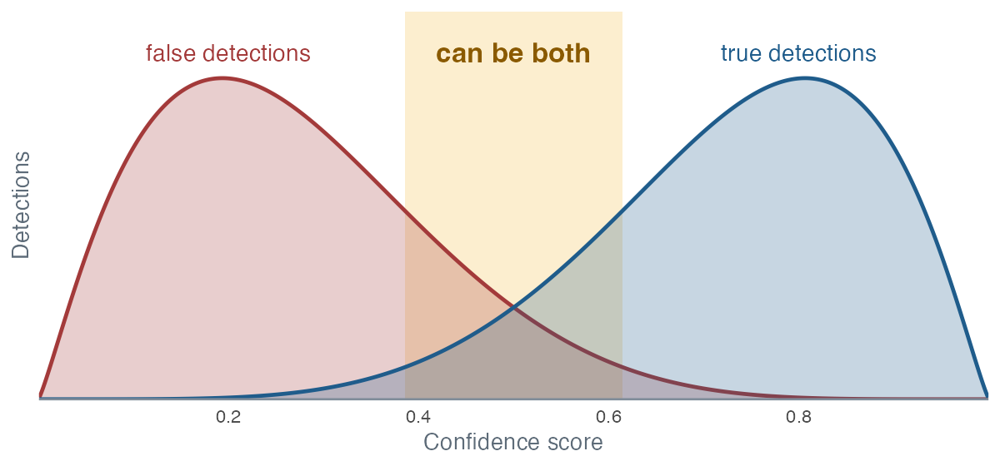
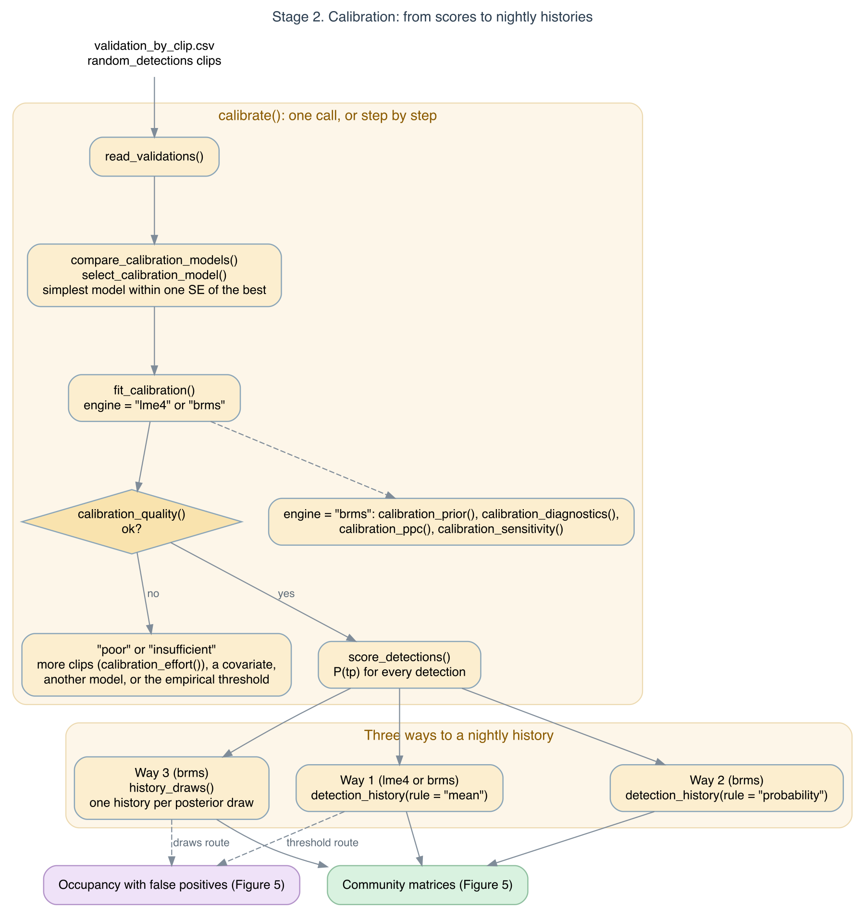
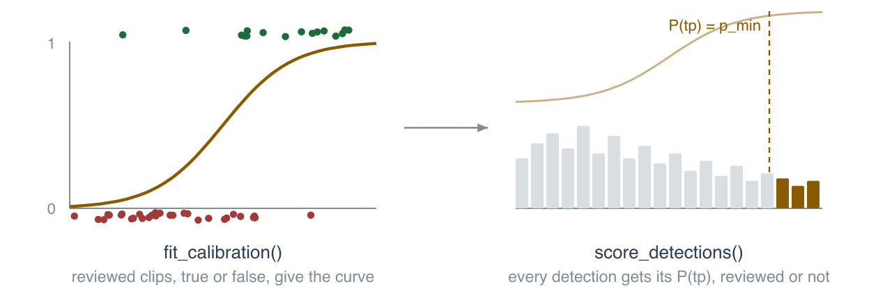

-
calibrate() - Calibrate confidence scores and build detection histories
-
read_validations() - Read the validation tables for calibration
-
calibration_models() - Candidate calibration models
-
calibration_folds() - Assign cross-validation folds for calibration
-
compare_calibration_models() - Compare calibration models by cross-validation
-
select_calibration_model() - Select the calibration model
-
calibration_quality() - Check the quality of the calibrated probabilities by species
-
fit_calibration() - Fit the calibration model
-
calibration_effort() - Effort curve of the calibration
-
score_detections() - Score every detection with the calibration model
-
calibrated_thresholds() - Confidence thresholds from the calibration model
-
compare_thresholds() - Compare the empirical and the model-based thresholds
-
detection_history() - Nightly detection history
-
threshold_history() - Nightly detection history from empirical thresholds
-
summarise_history() - Summarise the detection history by site and species
-
plot_calibration() - Plot the calibration curves
Stage 2 - Bayesian calibration
Fit the calibration with brms, check the prior and the fit, and propagate the uncertainty to the histories and the matrices.
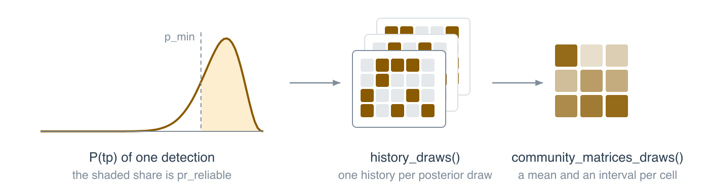
-
calibration_prior() - Example prior for a Bayesian calibration model
-
prior_predictive_calibration() - Prior predictive calibration curves
-
calibration_diagnostics() - Convergence diagnostics of a Bayesian calibration model
-
calibration_sensitivity() - Prior and likelihood sensitivity of a Bayesian calibration model
-
plot_calibration_draws() - Calibration curves of posterior (or prior) draws
-
calibration_ppc() - Posterior predictive checks of a Bayesian calibration model
-
plot_calibration_ppc() - Plot posterior predictive checks of a calibration model
-
history_draws() - Nightly detection histories over posterior draws
-
occasion_draws() - Detections of each occasion over the draws of the calibration
-
community_matrices_draws() - Community matrices over posterior draws
Stage 3 - Community matrices
Effort-standardised site x month matrices from calibrated histories. The diagram also shows the occupancy export.
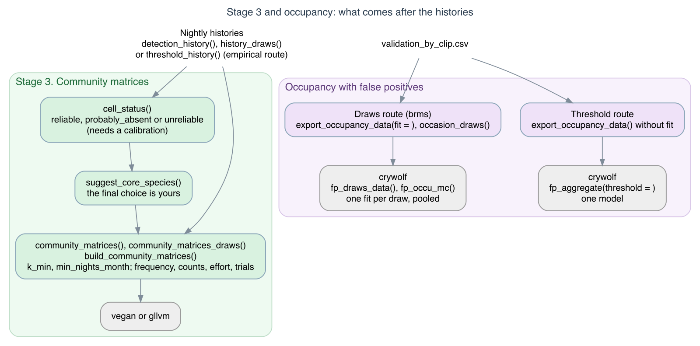

-
build_community_matrices() - Write the community matrices
-
community_matrices() - Community matrices from the detection history
-
cell_status() - Status of each site x species cell for the community matrices
-
suggest_core_species() - Suggest the core species of the community matrices
Occupancy models
Export the occasions, scores, reviewed clips and calibration draws for occupancy models with false positives, such as those of crywolf. See How crywolf works.
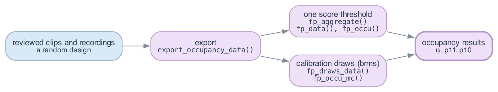
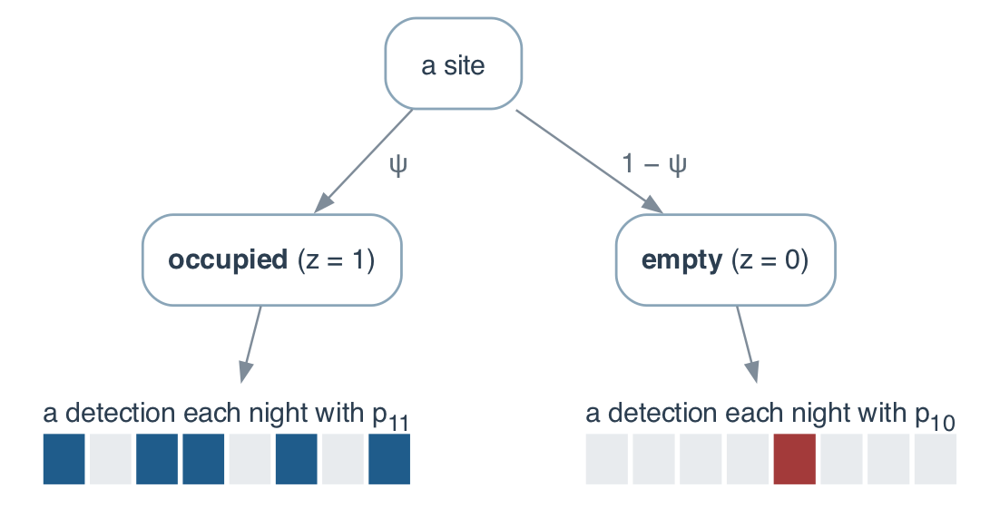
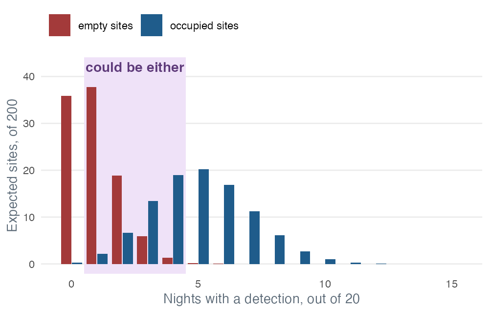
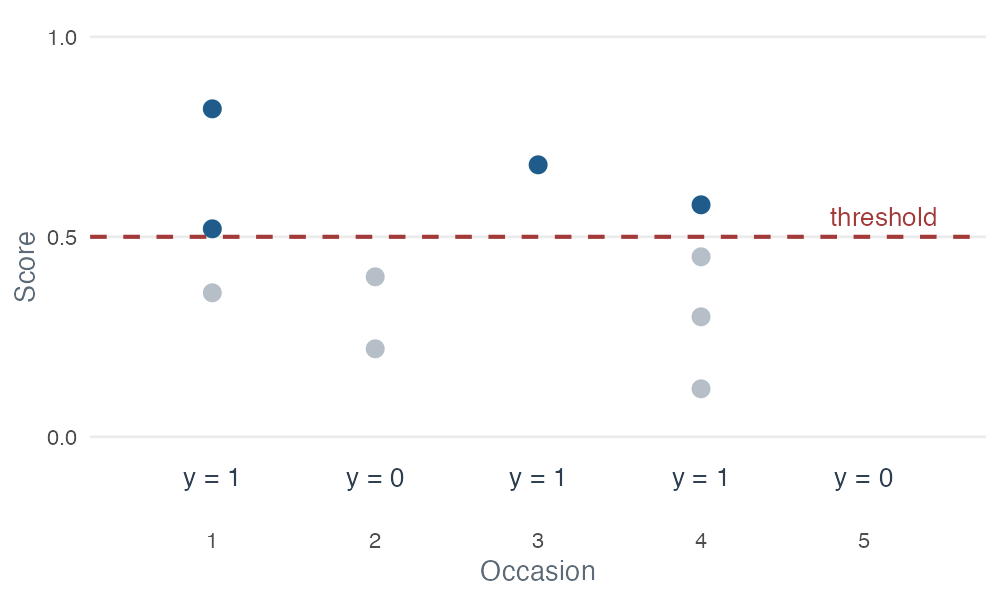
-
export_occupancy_data() - Export the data of an occupancy model with false positives
-
sheepdogsheepdog-package - sheepdog: Sample, Validate and Calibrate 'BirdNET' Detections